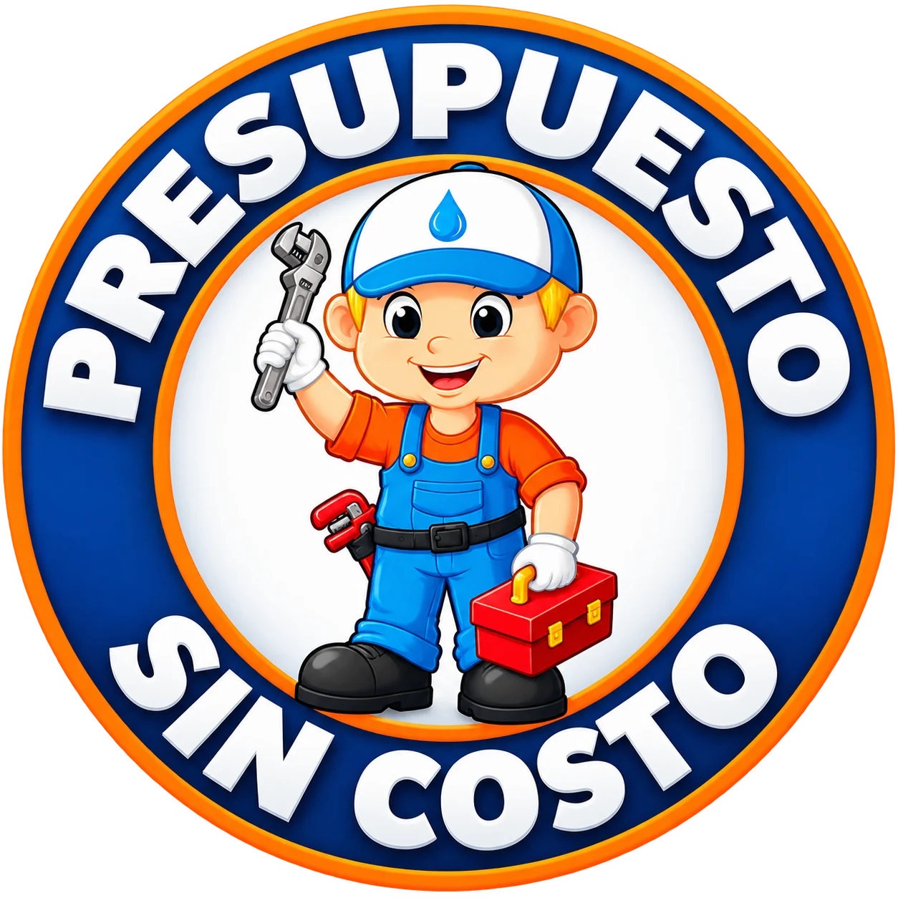

Renovación de tu cocina
Adaptación de conexiones e instalaciones de sanitaria para acompañar la nueva distribución de tu cocina.
Consultar por WhatsAppRenová las instalaciones y recuperá el placer de disfrutar tu espacio.
Contanos tu proyectoVer el paso a pasoConocé las etapas de la renovación. Tocá la imagen para verla más grande.
Secuencia ilustrativa. No corresponde a una obra real documentada de Javier.
Javier Guevara · Instalaciones, conexiones y reparaciones para el cambio que imaginás.
Imágenes ilustrativas de los servicios. Próximamente incorporaremos fotografías de trabajos realizados por Javier.
Fotos originales de reformas de baños y otros espacios. Tocá cada imagen para verla completa.

Javier Guevara · La Unión, Montevideo · 095 730 465